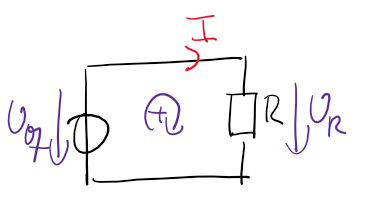
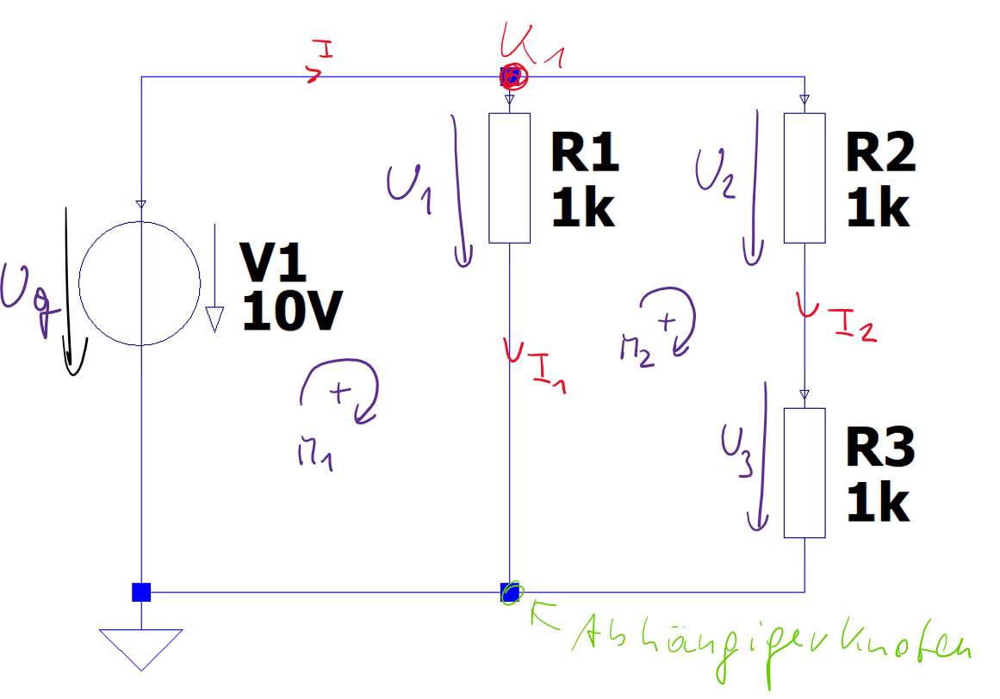
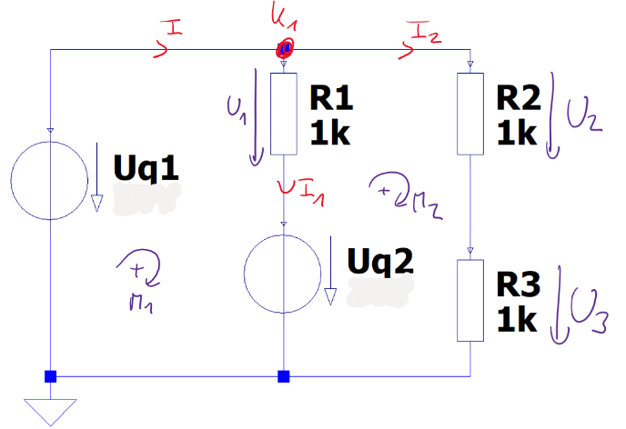
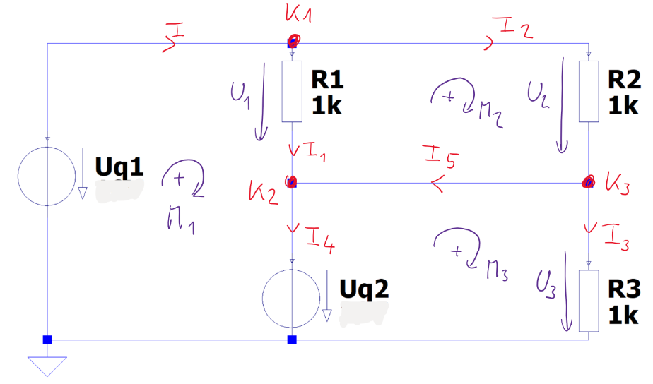
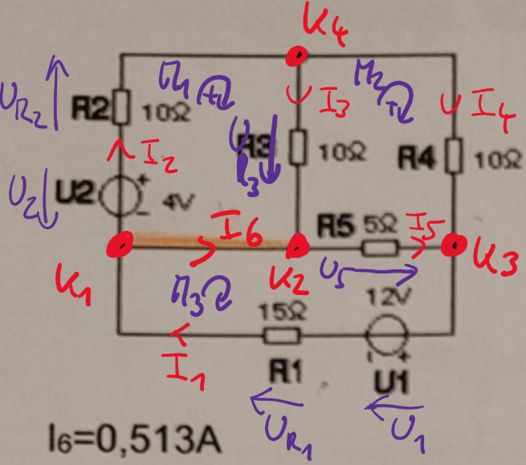

\(R\) … Widerstand
\(U_{q}\) … Quellspannung
\(U_{R}\) … Spannungsabfall am Widerstand
\(I\) … Strom
Die Knoten-Spannungsanalyse ist eine Methode zur Berechnung der unbekannten elektrischen Größen in einem Netzwerk von elektrischen oder elektronischen Komponenten.
Unter Verwendung der Knotenregel, der Maschenregel und dem Ohmschen Gesetz werden Gleichungen aufgestellt, welche die Schaltung rechnerisch beschreiben. Es entsteht ein lineares Gleichungssystem, das gelöst werden kann.
Alternativ kann das lineare Gleichungssystem in Matrixform \(A \cdot x = b\) geschrieben und mit Matrizen gelöst werden.
Dies ist besonders gut geeignet, wenn die Schaltung komplex ist und viele Unbekannte enthält und damit mittels Berechnungsprogrammen gelöst werden soll.
Weiterfuehrende Links:
Für ein lineares Gleichungssystem mit \(n\) Unbekannten wird zuerst eine feste Reihenfolge der Unbekannten gewählt, zum Beispiel
\[ x = \begin{pmatrix}x_1\\x_2\\\vdots\\x_n\end{pmatrix}. \]
Danach werden alle Gleichungen so umgeformt, dass links nur Terme mit Unbekannten stehen und rechts nur Zahlenwerte bzw. bekannte Größen. Dadurch entsteht die Matrixgleichung
\[ A \cdot x = b. \]
Dabei gilt:
\[ A = \begin{pmatrix} a_{11} & a_{12} & \cdots & a_{1n} \\ a_{21} & a_{22} & \cdots & a_{2n} \\ \vdots & \vdots & \ddots & \vdots \\ a_{n1} & a_{n2} & \cdots & a_{nn} \end{pmatrix}, \qquad b = \begin{pmatrix}b_1\\b_2\\\vdots\\b_n\end{pmatrix}. \]
Zur praktischen Rechnung wird oft die erweiterte Matrix verwendet. Dabei werden die Koeffizientenmatrix \(A\) und der rechte Vektor \(b\) zu einer Matrix zusammengefasst:
\[ (A|b) = \left(\begin{array}{cccc|c} a_{11} & a_{12} & \cdots & a_{1n} & b_1 \\ a_{21} & a_{22} & \cdots & a_{2n} & b_2 \\ \vdots & \vdots & \ddots & \vdots & \vdots \\ a_{n1} & a_{n2} & \cdots & a_{nn} & b_n \end{array}\right). \]
Diese Schreibweise ist hilfreich, weil alle Umformungen in einem einzigen Objekt durchgeführt werden.
Bei der Gauß-Elimination sind nur drei Zeilenumformungen erlaubt:
Ziel ist die Zeilenstufenform. Danach werden die Unbekannten durch Rückwärtseinsetzen berechnet.
Wenn in einer Zeile links nur Nullen stehen, ergeben sich zwei wichtige Fälle:
Nach der Umformung zur Zeilenstufenform liegt die erweiterte Matrix typischerweise in der Form
\[ \left(\begin{array}{cccc|c} * & * & \cdots & * & * \\ 0 & * & \cdots & * & * \\ \vdots & \vdots & \ddots & \vdots & \vdots \\ 0 & 0 & \cdots & * & * \end{array}\right) \]
vor. Daraus entstehen die Lösungsschritte:
Wichtig: Die Probe wird mit den Ausgangsgleichungen durchgeführt, nicht mit bereits umgeformten Zwischenzeilen.
Für quadratische Systeme kann man die Lösbarkeit auch über die Determinante prüfen:
Falls \(\det(A) \neq 0\), kann jede Unbekannte mit der Cramerschen Regel berechnet werden:
\[ x_i = \frac{\det(A_i)}{\det(A)}, \]
wobei \(A_i\) aus \(A\) entsteht, indem die \(i\)-te Spalte durch \(b\) ersetzt wird.
Die Determinantenmethode ist didaktisch sehr nützlich, für größere Systeme ist die Gauß-Elimination meist der praktischere Rechenweg.
Nach der Gauß-Elimination liegt die letzte Zeile meist als Gleichung mit nur einer Unbekannten vor. Diese Unbekannte wird zuerst berechnet. Danach wird ihr Wert in die Zeile darüber eingesetzt, wodurch dort wieder nur eine neue Unbekannte übrig bleibt. So arbeitet man sich von unten nach oben, bis alle Unbekannten bestimmt sind.
Alle berechneten Werte werden in die ursprünglichen Knoten-, Maschen- und Ohm-Gleichungen eingesetzt. Ist jede Gleichung erfüllt, ist die Lösung konsistent. Tritt in einer Gleichung ein Widerspruch auf, liegt ein Rechen- oder Umformungsfehler vor und die betroffenen Schritte müssen überprüft werden.
In Grafik Abbildung 2.1 ist ein Netzwerk aus Widerständen und Spannungsquellen dargestellt.

Vorgehensweise
1. Alle Ströme und Spannungen einzeichnen
2. Unbekannte Größen definieren
\(R\) … Widerstand
\(U_{q}\) … Quellspannung
\(U_{R}\) … Spannungsabfall am Widerstand
\(I\) … Strom
3. Knoten und Maschen einzeichnen
Siehe Abbildung 2.1
4. Knoten- und Maschengleichungen aufstellen
Maschengleichungen
\(\displaystyle 0 = U_{R} - U_{q}\)
Knotengleichungen
Es gibt keinen Knoten
5. Ohmsche Gesetze für die Widerstände anschreiben
Ohmsches Gesetz
\(\displaystyle U_{R} = I R\)
6. Überprüfen, ob es gleich viele Gleichungen wie Unbekannte gibt
Passt, es gibt 2 Gleichungen und 2 Unbekannte.
7. Gleichungssystem lösen
Das Gleichungssystem kann mit der Hand gelöst werden. Für komplexere Schaltungen ist es sinnvoll, ein Computerprogramm zu verwenden.
Vorgehen mit Zettel und Stift:
\(\displaystyle U_{R} = U_{q}\)
\(\displaystyle I = \frac{U_{q}}{R}\)
Die Matrixrechnung kann ebenfalls händisch durchgeführt werden:
Von \((A|b)\) zur Lösung in diesem Beispiel:
Vollständige Ausrechnung (händisch):
Zuerst in matrixgeeignete Normalform bringen (alle Unbekannten links, bekannte Größen rechts):
\[ \begin{aligned} U_R + 0\,I &= U_q \\ U_R - R I &= 0 \end{aligned} \]
mit Unbekanntenvektor \(x = \begin{pmatrix}U_R \\ I\end{pmatrix}\) folgt
\[ A = \begin{pmatrix}1 & 0 \\ 1 & -R\end{pmatrix}, \quad b = \begin{pmatrix}U_q \\ 0\end{pmatrix}, \quad (A|b)= \left(\begin{array}{cc|c} 1 & 0 & U_q \\ 1 & -R & 0 \end{array}\right). \]
Die Matrixschreibweise lautet damit explizit:
\[ \begin{pmatrix}1 & 0 \\ 1 & -R\end{pmatrix} \cdot \begin{pmatrix}U_R \\ I\end{pmatrix} = \begin{pmatrix}U_q \\ 0\end{pmatrix}. \]
Zeilenumformung:
\[ Z_2 \leftarrow Z_2 - Z_1 \Rightarrow \left(\begin{array}{cc|c} 1 & 0 & U_q \\ 0 & -R & -U_q \end{array}\right). \]
Rückwärtseinsetzen:
\[ \begin{aligned} -R I &= -U_q \Rightarrow I = \frac{U_q}{R},\\ U_R &= U_q. \end{aligned} \]
Probe:
\[ U_R - R I = U_q - R\cdot\frac{U_q}{R} = 0. \]
Für so eine einfache Schaltung würde man die Knoten-Spannungs-Analyse nicht verwenden. Die Methode lässt sich allerdings auf beliebig Komplexe Schaltungen anwenden.
In Grafik Abbildung 2.2 ist ein Netzwerk aus Widerständen und Spannungsquellen dargestellt.

Vorgehensweise
1. Alle Ströme und Spannungen einzeichnen
2. Unbekannte Größen definieren
\(R_{1}\) … Widerstand 1
\(R_{2}\) … Widerstand 2
\(R_{3}\) … Widerstand 3
\(U_{q}\) … Quellspannung
\(U_{1}\) … Spannungsabfall an R1
\(U_{2}\) … Spannungsabfall an R2
\(U_{3}\) … Spannungsabfall an R3
\(I_{1}\) … Strom durch R1
\(I_{2}\) … Strom durch R2
\(I\) … Gesamtstrom
3. Knoten und Maschen einzeichnen
Siehe Abbildung 2.2
4. Knoten- und Maschengleichungen aufstellen
Maschengleichungen
\[ 0 = U_{1} - U_{q} \tag{2.1}\]
\[ 0 = - U_{1} + U_{2} + U_{3} \tag{2.2}\]
Knotengleichungen
\[ 0 = I - I_{1} - I_{2} \tag{2.3}\]
5. Ohmsche Gesetze für die Widerstände anschreiben
Ohmsches Gesetz
\[ U_{1} = I_{1} R_{1} \tag{2.4}\]
\[ U_{2} = I_{2} R_{2} \tag{2.5}\]
\[ U_{3} = I_{2} R_{3} \tag{2.6}\]
6. Überprüfen ob es gleich viele Gleichungen wie Unbekannte gibt
Passt, es gibt 6 Gleichungen und 6 Unbekannte.
7. Gleichungssystem lösen
Das Gleichungssystem kann mit der Hand gelöst werden. Für komplexere Schaltungen ist es sinnvoll, ein Computerprogramm zu verwenden.
Rechenweg in kurzen Schritten:
\[ U_{1} = U_{q} \tag{2.7}\]
\[U_{1} = \mathtt{\text{10}} \ \mathtt{\text{V}}\]
\[ U_{2} = \frac{R_{2} U_{q}}{R_{2} + R_{3}} \tag{2.8}\]
\[U_{2} = \mathtt{\text{5}} \ \mathtt{\text{V}}\]
\[ U_{3} = \frac{R_{3} U_{q}}{R_{2} + R_{3}} \tag{2.9}\]
\[U_{3} = \mathtt{\text{5}} \ \mathtt{\text{V}}\]
\[ I_{1} = \frac{U_{q}}{R_{1}} \tag{2.10}\]
\[I_{1} = \mathtt{\text{10}} \ \mathtt{\text{mA}}\]
\[ I_{2} = \frac{U_{q}}{R_{2} + R_{3}} \tag{2.11}\]
\[I_{2} = \mathtt{\text{5}} \ \mathtt{\text{mA}}\]
\[ I = \frac{R_{1} U_{q} + R_{2} U_{q} + R_{3} U_{q}}{R_{1} R_{2} + R_{1} R_{3}} \tag{2.12}\]
\[I = \mathtt{\text{15}} \ \mathtt{\text{mA}}\]
Für die Matrixdarstellung wird das System wieder in kleine Arbeitsschritte zerlegt:
Von \((A|b)\) zur Lösung in diesem Beispiel:
Vollständige Ausrechnung (händisch, symbolisch):
Ziel: Die sechs Unbekannten \(U_1, U_2, U_3, I_1, I_2, I\) nacheinander so bestimmen, dass jede neue Gleichung möglichst nur noch eine neue Unbekannte enthält.
Welche Gleichungen werden in die Matrix gebracht?
Ausgangspunkt ist das volle Gleichungssystem aus Beispiel 2:
\[ \begin{aligned} M1:&\ -U_q + U_1 = 0,\\ M2:&\ -U_1 + U_2 + U_3 = 0,\\ K1:&\ I - I_1 - I_2 = 0,\\ O1:&\ U_1 - R_1 I_1 = 0,\\ O2:&\ U_2 - R_2 I_2 = 0,\\ O3:&\ U_3 - R_3 I_2 = 0. \end{aligned} \]
Fuer die handschriftliche Matrixrechnung wird daraus ein aequivalentes reduziertes Strom-System gebildet:
Explizite Gauß-Zeilenumformungen (auf dem reduzierten Strom-System):
Zuerst in matrixgeeignete Normalform bringen (alle Unbekannten links, bekannte Groessen rechts):
\[ R_1 I_1 = U_q, \qquad \left(R_2 + R_3\right) I_2 = U_q, \qquad I - I_1 - I_2 = 0. \]
Mit Unbekanntenvektor \(\begin{pmatrix}I_1 \\ I_2 \\ I\end{pmatrix}\) ergibt sich die erweiterte Matrix
\[ \left(\begin{array}{ccc|c} R_1 & 0 & 0 & U_q \\ 0 & R_2+R_3 & 0 & U_q \\ -1 & -1 & 1 & 0 \end{array}\right). \]
Die Matrixschreibweise lautet damit explizit:
\[ \begin{pmatrix} R_1 & 0 & 0 \\ 0 & R_2+R_3 & 0 \\ -1 & -1 & 1 \end{pmatrix} \cdot \begin{pmatrix}I_1 \\ I_2 \\ I\end{pmatrix} = \begin{pmatrix}U_q \\ U_q \\ 0\end{pmatrix}. \]
Zeilenumformungen:
\[ Z_3 \leftarrow Z_3 + \frac{1}{R_1} Z_1 \Rightarrow \left(\begin{array}{ccc|c} R_1 & 0 & 0 & U_q \\ 0 & R_2+R_3 & 0 & U_q \\ 0 & -1 & 1 & \frac{U_q}{R_1} \end{array}\right) \]
\[ Z_3 \leftarrow Z_3 + \frac{1}{R_2+R_3} Z_2 \Rightarrow \left(\begin{array}{ccc|c} R_1 & 0 & 0 & U_q \\ 0 & R_2+R_3 & 0 & U_q \\ 0 & 0 & 1 & \frac{U_q}{R_1} + \frac{U_q}{R_2+R_3} \end{array}\right). \]
Rückwärtseinsetzen liefert damit direkt:
\[ I = \frac{U_q}{R_1} + \frac{U_q}{R_2+R_3}, \qquad I_2 = \frac{U_q}{R_2+R_3}, \qquad I_1 = \frac{U_q}{R_1}. \]
Aus den Gleichungen folgen direkt
\[ U_1 = U_q, \qquad U_2 + U_3 = U_1 = U_q. \]
Mit den Ohmschen Gesetzen
\[ U_1 = R_1 I_1, \quad U_2 = R_2 I_2, \quad U_3 = R_3 I_2 \]
erhaelt man:
\[ I_1 = \frac{U_1}{R_1} = \frac{U_q}{R_1}. \]
Außerdem gilt
\[ U_2 + U_3 = (R_2+R_3)I_2 = U_q \Rightarrow I_2 = \frac{U_q}{R_2+R_3}. \]
Damit:
\[ U_2 = R_2 I_2 = \frac{R_2}{R_2+R_3}U_q, \qquad U_3 = R_3 I_2 = \frac{R_3}{R_2+R_3}U_q. \]
Aus der Knotengleichung:
\[ I = I_1 + I_2 = \frac{U_q}{R_1} + \frac{U_q}{R_2+R_3}. \]
Erst zum Schluss Werte einsetzen (hier: \(R_1=R_2=R_3=1000\,\Omega\), \(U_q=10\,\mathrm{V}\)):
\[ I_1 = 0.01\,\mathrm{A},\quad I_2 = 0.005\,\mathrm{A},\quad I = 0.015\,\mathrm{A},\quad U_1 = 10\,\mathrm{V},\quad U_2 = 5\,\mathrm{V},\quad U_3 = 5\,\mathrm{V}. \]
Lösung (mit eingesetzten Werten):
\[ \begin{aligned} U_1 &= 10\,\mathrm{V}, & U_2 &= 5\,\mathrm{V}, & U_3 &= 5\,\mathrm{V},\\ I_1 &= 0.01\,\mathrm{A}, & I_2 &= 0.005\,\mathrm{A}, & I &= 0.015\,\mathrm{A}. \end{aligned} \]
Probe:
Die Probe ist wichtig, weil bei mehreren Umformungen kleine Vorzeichenfehler häufig sind. Erst wenn sowohl Maschen- als auch Knotengleichungen erfüllt sind, ist die Lösung verlässlich.
\[ \begin{aligned} M2:&\ -U_1 + U_2 + U_3 = -10 + 5 + 5 = 0,\\ K1:&\ I - I_1 - I_2 = 0.015 - 0.01 - 0.005 = 0. \end{aligned} \]
In Grafik Abbildung 2.3 ist ein Netzwerk aus Widerständen und Spannungsquellen dargestellt.

\[R_{1} = \mathtt{\text{1}} \ \mathrm{k\Omega}\]
\[R_{2} = \mathtt{\text{1}} \ \mathrm{k\Omega}\]
\[R_{3} = \mathtt{\text{1}} \ \mathrm{k\Omega}\]
\[U_{q1} = \mathtt{\text{10}} \ \mathtt{\text{V}}\]
\[U_{q2} = \mathtt{\text{1}} \ \mathtt{\text{V}}\]
\(U_{1}\) … Spannungsabfall an R1
\(U_{2}\) … Spannungsabfall an R2
\(U_{3}\) … Spannungsabfall an R3
\(I_{1}\) … Strom durch R1
\(I_{2}\) … Strom durch R2
\(I\) … Gesamtstrom
Siehe Abbildung 2.3
Maschengleichungen
\[ 0 = U_{1} - U_{q1} + U_{q2} \tag{2.13}\]
\[ 0 = - U_{1} + U_{2} + U_{3} - U_{q2} \tag{2.14}\]
Knotengleichungen
\[ 0 = I - I_{1} - I_{2} \tag{2.15}\]
Ohmsches Gesetz
\[ U_{1} = I_{1} R_{1} \tag{2.16}\]
\[ U_{2} = I_{2} R_{2} \tag{2.17}\]
\[ U_{3} = I_{2} R_{3} \tag{2.18}\]
Passt, es gibt 6 Gleichungen und 6 Unbekannte.
Das Gleichungssystem kann mit der Hand gelöst werden. Für komplexere Schaltungen ist es sinnvoll, ein Computerprogramm zu verwenden.
Hier ist der Lösungsweg besonders übersichtlich:
\[ U_{1} = U_{q1} - U_{q2} \tag{2.19}\]
\[U_{1} = \mathtt{\text{9}} \ \mathtt{\text{V}}\]
\[ U_{2} = \frac{R_{2} U_{q1}}{R_{2} + R_{3}} \tag{2.20}\]
\[U_{2} = \mathtt{\text{5}} \ \mathtt{\text{V}}\]
\[ U_{3} = \frac{R_{3} U_{q1}}{R_{2} + R_{3}} \tag{2.21}\]
\[U_{3} = \mathtt{\text{5}} \ \mathtt{\text{V}}\]
\[ I_{1} = \frac{U_{q1} - U_{q2}}{R_{1}} \tag{2.22}\]
\[I_{1} = \mathtt{\text{9}} \ \mathtt{\text{mA}}\]
\[ I_{2} = \frac{U_{q1}}{R_{2} + R_{3}} \tag{2.23}\]
\[I_{2} = \mathtt{\text{5}} \ \mathtt{\text{mA}}\]
\[ I = \frac{R_{1} U_{q1} + R_{2} U_{q1} - R_{2} U_{q2} + R_{3} U_{q1} - R_{3} U_{q2}}{R_{1} R_{2} + R_{1} R_{3}} \tag{2.24}\]
\[I = \mathtt{\text{14}} \ \mathtt{\text{mA}}\]
Vollstaendige Ausrechnung (haendisch, symbolisch):
Welche Gleichungen werden in die Matrix gebracht?
Ausgangspunkt ist das volle Gleichungssystem aus Beispiel 3:
\[ \begin{aligned} M1:&\ -U_{q1} + U_1 + U_{q2} = 0,\\ M2:&\ -U_1 - U_{q2} + U_2 + U_3 = 0,\\ K1:&\ I - I_1 - I_2 = 0,\\ O1:&\ U_1 - R_1 I_1 = 0,\\ O2:&\ U_2 - R_2 I_2 = 0,\\ O3:&\ U_3 - R_3 I_2 = 0. \end{aligned} \]
Fuer die handschriftliche Matrixrechnung wird wieder ein aequivalentes reduziertes Strom-System verwendet:
\[ \begin{aligned} R_1 I_1 &= U_{q1}-U_{q2},\\ \left(R_2+R_3\right)I_2 &= U_{q1}-U_{q2},\\ I-I_1-I_2 &= 0. \end{aligned} \]
Mit Unbekanntenvektor \(\begin{pmatrix}I_1 \\ I_2 \\ I\end{pmatrix}\) ergibt sich:
\[ \begin{pmatrix} R_1 & 0 & 0 \\ 0 & R_2+R_3 & 0 \\ -1 & -1 & 1 \end{pmatrix} \cdot \begin{pmatrix}I_1 \\ I_2 \\ I\end{pmatrix} = \begin{pmatrix}U_{q1}-U_{q2} \\ U_{q1}-U_{q2} \\ 0\end{pmatrix}. \]
Erst zum Schluss Werte einsetzen und die Probe in den Ausgangsgleichungen durchfuehren.
Matrixgleichung in kompakter Form
\[A \cdot x = b\]
\[\left[\begin{matrix}-1 & 0 & 0 & 0 & 0 & 0\\1 & -1 & -1 & 0 & 0 & 0\\0 & 0 & 0 & 1 & 1 & -1\\1 & 0 & 0 & - R_{1} & 0 & 0\\0 & 1 & 0 & 0 & - R_{2} & 0\\0 & 0 & 1 & 0 & - R_{3} & 0\end{matrix}\right] \cdot \left[\begin{matrix}U_{1}\\U_{2}\\U_{3}\\I_{1}\\I_{2}\\I\end{matrix}\right] = \left[\begin{matrix}- U_{q1} + U_{q2}\\- U_{q2}\\0\\0\\0\\0\end{matrix}\right]\]
\(\displaystyle U_{1} = U_{q1} - U_{q2}\)
\(\displaystyle U_{2} = \frac{R_{2} U_{q1}}{R_{2} + R_{3}}\)
\(\displaystyle U_{3} = \frac{R_{3} U_{q1}}{R_{2} + R_{3}}\)
\(\displaystyle I_{1} = \frac{U_{q1}}{R_{1}} - \frac{U_{q2}}{R_{1}}\)
\(\displaystyle I_{2} = \frac{U_{q1}}{R_{2} + R_{3}}\)
\(\displaystyle I = \frac{R_{1} U_{q1} + R_{2} U_{q1} - R_{2} U_{q2} + R_{3} U_{q1} - R_{3} U_{q2}}{R_{1} R_{2} + R_{1} R_{3}}\)
In Grafik Abbildung 2.4 ist ein Netzwerk aus Widerständen und Spannungsquellen dargestellt.

Vorgehensweise
1. Alle Ströme und Spannungen einzeichnen
2. Unbekannte Größen definieren
Bekannte Größen
\(R_{1}\) … Widerstand 1
\(R_{2}\) … Widerstand 2
\(R_{3}\) … Widerstand 3
\(U_{q1}\) … Quellspannung
\(U_{q2}\) … Quellspannung
\[R_{1} = \mathtt{\text{1}} \ \mathrm{k\Omega}\]
\[R_{2} = \mathtt{\text{1}} \ \mathrm{k\Omega}\]
\[R_{3} = \mathtt{\text{1}} \ \mathrm{k\Omega}\]
\[U_{q1} = \mathtt{\text{10}} \ \mathtt{\text{V}}\]
\[U_{q2} = \mathtt{\text{1}} \ \mathtt{\text{V}}\]
Unbekannte Größen
\(U_{1}\) … Spannungsabfall an R1
\(U_{2}\) … Spannungsabfall an R2
\(U_{3}\) … Spannungsabfall an R3
\(I_{1}\) … Strom durch R1
\(I_{2}\) … Strom durch R2
\(I_{3}\) … Strom durch R3
\(I_{4}\) … Strom durch Quelle \(U_{q2}\)
\(I_{5}\) … Querstrom
\(I\) … Gesamtstrom
3. Knoten und Maschen einzeichnen
Siehe Abbildung 2.4
4. Knoten- und Maschengleichungen aufstellen
Maschengleichungen
\[ 0 = U_{1} - U_{q1} + U_{q2} \tag{2.25}\]
\[ 0 = - U_{1} + U_{2} \tag{2.26}\]
\[ 0 = U_{3} - U_{q2} \tag{2.27}\]
Knotengleichungen
\[ 0 = I - I_{1} - I_{2} \tag{2.28}\]
\[ 0 = I_{1} - I_{4} + I_{5} \tag{2.29}\]
\[ 0 = I_{2} - I_{3} - I_{5} \tag{2.30}\]
5. Ohmsche Gesetze für die Widerstände anschreiben
Ohmsches Gesetz
\[ U_{1} = I_{1} R_{1} \tag{2.31}\]
\[ U_{2} = I_{2} R_{2} \tag{2.32}\]
\[ U_{3} = I_{3} R_{3} \tag{2.33}\]
6. Überprüfen ob es gleich viele Gleichungen wie Unbekannte gibt
Passt, es gibt 9 Gleichungen und 9 Unbekannte.
7. Gleichungssystem lösen
Wenn mehr Gleichungen als Unbekannte vorhanden sind, hilft dieses Schema:
\[ U_{1} = U_{q1} - U_{q2} \tag{2.34}\]
\[U_{1} = \mathtt{\text{9}} \ \mathtt{\text{V}}\]
\[ U_{2} = U_{q1} - U_{q2} \tag{2.35}\]
\[U_{2} = \mathtt{\text{9}} \ \mathtt{\text{V}}\]
\[ U_{3} = U_{q2} \tag{2.36}\]
\[U_{3} = \mathtt{\text{1}} \ \mathtt{\text{V}}\]
\[ I_{1} = \frac{U_{q1} - U_{q2}}{R_{1}} \tag{2.37}\]
\[I_{1} = \mathtt{\text{9}} \ \mathtt{\text{mA}}\]
\[ I_{2} = \frac{U_{q1} - U_{q2}}{R_{2}} \tag{2.38}\]
\[I_{2} = \mathtt{\text{9}} \ \mathtt{\text{mA}}\]
\[ I_{3} = \frac{U_{q2}}{R_{3}} \tag{2.39}\]
\[I_{3} = \mathtt{\text{1}} \ \mathtt{\text{mA}}\]
\[ I_{4} = \frac{- R_{1} R_{2} U_{q2} + R_{1} R_{3} U_{q1} - R_{1} R_{3} U_{q2} + R_{2} R_{3} U_{q1} - R_{2} R_{3} U_{q2}}{R_{1} R_{2} R_{3}} \tag{2.40}\]
\[I_{4} = \mathtt{\text{17}} \ \mathtt{\text{mA}}\]
\[ I_{5} = \frac{- R_{2} U_{q2} + R_{3} U_{q1} - R_{3} U_{q2}}{R_{2} R_{3}} \tag{2.41}\]
\[I_{5} = \mathtt{\text{8}} \ \mathtt{\text{mA}}\]
\[ I = \frac{R_{1} U_{q1} - R_{1} U_{q2} + R_{2} U_{q1} - R_{2} U_{q2}}{R_{1} R_{2}} \tag{2.42}\]
\[I = \mathtt{\text{18}} \ \mathtt{\text{mA}}\]
Vollstaendige Ausrechnung (haendisch, symbolisch):
Welche Gleichungen werden in die Matrix gebracht?
In Beispiel 4 wird das volle, bereits aufgestellte Gleichungssystem verwendet:
\[ \begin{aligned} M1:&\ -U_{q1}+U_1+U_{q2}=0,\\ M2:&\ -U_1+U_2=0,\\ M3:&\ -U_{q2}+U_3=0,\\ K1:&\ I-I_1-I_2=0,\\ K2:&\ I_1-I_4+I_5=0,\\ K3:&\ I_2-I_5-I_3=0,\\ O1:&\ U_1-R_1 I_1=0,\\ O2:&\ U_2-R_2 I_2=0,\\ O3:&\ U_3-R_3 I_3=0. \end{aligned} \]
Unbekanntenreihenfolge (wie im Code):
\[ x = \begin{pmatrix}U_1\\U_2\\U_3\\I_1\\I_2\\I_3\\I_4\\I_5\\I\end{pmatrix}. \]
Damit wird direkt die Matrixgleichung \(A\cdot x=b\) gebildet und mit Gauß geloest. Numerische Werte werden erst nach der symbolischen Loesung eingesetzt.
Matrixgleichung in kompakter Form
\[A \cdot x = b\]
\[\left[\begin{matrix}-1 & 0 & 0 & 0 & 0 & 0 & 0 & 0 & 0\\1 & -1 & 0 & 0 & 0 & 0 & 0 & 0 & 0\\0 & 0 & -1 & 0 & 0 & 0 & 0 & 0 & 0\\0 & 0 & 0 & 1 & 1 & 0 & 0 & 0 & -1\\0 & 0 & 0 & -1 & 0 & 0 & 1 & -1 & 0\\0 & 0 & 0 & 0 & -1 & 1 & 0 & 1 & 0\\1 & 0 & 0 & - R_{1} & 0 & 0 & 0 & 0 & 0\\0 & 1 & 0 & 0 & - R_{2} & 0 & 0 & 0 & 0\\0 & 0 & 1 & 0 & 0 & - R_{3} & 0 & 0 & 0\end{matrix}\right] \cdot \left[\begin{matrix}U_{1}\\U_{2}\\U_{3}\\I_{1}\\I_{2}\\I_{3}\\I_{4}\\I_{5}\\I\end{matrix}\right] = \left[\begin{matrix}- U_{q1} + U_{q2}\\0\\- U_{q2}\\0\\0\\0\\0\\0\\0\end{matrix}\right]\]
\(\displaystyle U_{1} = U_{q1} - U_{q2}\)
\(\displaystyle U_{2} = U_{q1} - U_{q2}\)
\(\displaystyle U_{3} = U_{q2}\)
\(\displaystyle I_{1} = \frac{U_{q1}}{R_{1}} - \frac{U_{q2}}{R_{1}}\)
\(\displaystyle I_{2} = \frac{U_{q1}}{R_{2}} - \frac{U_{q2}}{R_{2}}\)
\(\displaystyle I_{3} = \frac{U_{q2}}{R_{3}}\)
\(\displaystyle I_{4} = \frac{- R_{1} R_{2} U_{q2} + R_{1} R_{3} U_{q1} - R_{1} R_{3} U_{q2} + R_{2} R_{3} U_{q1} - R_{2} R_{3} U_{q2}}{R_{1} R_{2} R_{3}}\)
\(\displaystyle I_{5} = - \frac{U_{q2}}{R_{3}} + \frac{U_{q1}}{R_{2}} - \frac{U_{q2}}{R_{2}}\)
\(\displaystyle I = \frac{R_{1} U_{q1} - R_{1} U_{q2} + R_{2} U_{q1} - R_{2} U_{q2}}{R_{1} R_{2}}\)
In Grafik Abbildung 2.5 ist ein Netzwerk aus Widerständen und Spannungsquellen dargestellt.

Vorgehensweise
1. Alle Ströme und Spannungen einzeichnen
2. Unbekannte Größen definieren
from sympy import *
# Variablen
R1 = MySymbol('R1',description='Widerstand 1',unit=u.ohm,value=15)
R2 = MySymbol('R2',description='Widerstand 2',unit=u.ohm,value=10)
R3 = MySymbol('R3',description='Widerstand 3',unit=u.ohm,value=10)
R4 = MySymbol('R4',description='Widerstand 3',unit=u.ohm,value=10)
R5 = MySymbol('R5',description='Widerstand 3',unit=u.ohm,value=5)
U1 = MySymbol('U_1',description='Quellspannung',unit=u.V,value=12)
U2 = MySymbol('U_2',description='Quellspannung',unit=u.V,value=4)
UR1 = MySymbol('U_R1',description='Spannungsabfall an R1',unit=u.V)
UR2 = MySymbol('U_R2',description='Spannungsabfall an R2',unit=u.V)
UR3 = MySymbol('U_R3',description='Spannungsabfall an R3',unit=u.V)
UR4 = MySymbol('U_R4',description='Spannungsabfall an R4',unit=u.V)
UR5 = MySymbol('U_R5',description='Spannungsabfall an R5',unit=u.V)
I1 = MySymbol('I1',description='Strom durch R1',unit=u.A)
I2 = MySymbol('I2',description='Strom durch R2',unit=u.A)
I3 = MySymbol('I3',description='Strom durch R3',unit=u.A)
I4 = MySymbol('I4',description='Strom durch R4',unit=u.A)
I5 = MySymbol('I5',description='Strom durch R5',unit=u.A)
I6 = MySymbol('I6',description='Querstrom',unit=u.A)
display(Markdown('**Bekannte Größen**'))
knowns = [R1,R2,R3,R4,R5,U1,U2]
QBookHelpers.print_description(knowns)
QBookHelpers.print_values(knowns)
display(Markdown('Anzahl der bekannten Größen:'))
display(len(knowns))
display(Markdown('**Unbekannte Größen**'))
unknowns = [UR1,UR2,UR3,UR4,UR5,I1,I2,I3,I4,I5,I6]
QBookHelpers.print_description(unknowns)
display(Markdown('Anzahl der unbekannten Größen:'))
display(len(unknowns))Bekannte Größen
\(R_{1}\) … Widerstand 1
\(R_{2}\) … Widerstand 2
\(R_{3}\) … Widerstand 3
\(R_{4}\) … Widerstand 3
\(R_{5}\) … Widerstand 3
\(U_{1}\) … Quellspannung
\(U_{2}\) … Quellspannung
\[R_{1} = \mathtt{\text{15}} \ \mathrm{\Omega}\]
\[R_{2} = \mathtt{\text{10}} \ \mathrm{\Omega}\]
\[R_{3} = \mathtt{\text{10}} \ \mathrm{\Omega}\]
\[R_{4} = \mathtt{\text{10}} \ \mathrm{\Omega}\]
\[R_{5} = \mathtt{\text{5}} \ \mathrm{\Omega}\]
\[U_{1} = \mathtt{\text{12}} \ \mathtt{\text{V}}\]
\[U_{2} = \mathtt{\text{4}} \ \mathtt{\text{V}}\]
Anzahl der bekannten Größen:
7Unbekannte Größen
\(U_{R1}\) … Spannungsabfall an R1
\(U_{R2}\) … Spannungsabfall an R2
\(U_{R3}\) … Spannungsabfall an R3
\(U_{R4}\) … Spannungsabfall an R4
\(U_{R5}\) … Spannungsabfall an R5
\(I_{1}\) … Strom durch R1
\(I_{2}\) … Strom durch R2
\(I_{3}\) … Strom durch R3
\(I_{4}\) … Strom durch R4
\(I_{5}\) … Strom durch R5
\(I_{6}\) … Querstrom
Anzahl der unbekannten Größen:
113. Knoten und Maschen einzeichnen
Siehe Abbildung 2.5
4. Knoten- und Maschengleichungen aufstellen
# Gleichungen
display(Markdown('Maschengleichungen'))
M1 = Eq(0, U1+UR1+UR5)
M2 = Eq(0, -UR5+UR4-UR3)
M3 = Eq(0, +UR3-U2+UR2)
QBookHelpers.print_equation(M1,label='eq-M1')
QBookHelpers.print_equation(M2,label='eq-M2')
QBookHelpers.print_equation(M3,label='eq-M3')
display(Markdown('Knotengleichungen'))
K1 = Eq(0, I1-I2-I6)
K2 = Eq(0, I6+I3-I5)
K3 = Eq(0, I4+I5-I1)
K4 = Eq(0, I2-I4-I3)
QBookHelpers.print_equation(K1,label='eq-K1')
QBookHelpers.print_equation(K2,label='eq-K2')
QBookHelpers.print_equation(K3,label='eq-K3')
QBookHelpers.print_equation(K4,label='eq-K4')Maschengleichungen
\[ 0 = U_{1} + U_{R1} + U_{R5} \tag{2.43}\]
\[ 0 = - U_{R3} + U_{R4} - U_{R5} \tag{2.44}\]
\[ 0 = - U_{2} + U_{R2} + U_{R3} \tag{2.45}\]
Knotengleichungen
\[ 0 = I_{1} - I_{2} - I_{6} \tag{2.46}\]
\[ 0 = I_{3} - I_{5} + I_{6} \tag{2.47}\]
\[ 0 = - I_{1} + I_{4} + I_{5} \tag{2.48}\]
\[ 0 = I_{2} - I_{3} - I_{4} \tag{2.49}\]
5. Ohmsche Gesetze für die Widerstände anschreiben
display(Markdown('Ohmsches Gesetz'))
O1 = Eq(UR1, R1*I1)
O2 = Eq(UR2, R2*I2)
O3 = Eq(UR3, R3*I3)
O4 = Eq(UR4, R4*I4)
O5 = Eq(UR5, R5*I5)
QBookHelpers.print_equation(O1,label='eq-O1')
QBookHelpers.print_equation(O2,label='eq-O2')
QBookHelpers.print_equation(O3, label='eq-O3')
QBookHelpers.print_equation(O4, label='eq-O4')
QBookHelpers.print_equation(O5, label='eq-O5')
equations = [M1,M2,M3,K1,K2,K3,K4,O1,O2,O3,O4,O5]
display(Markdown('Anzahl der Gleichungen:'))
display(len(equations))Ohmsches Gesetz
\[ U_{R1} = I_{1} R_{1} \tag{2.50}\]
\[ U_{R2} = I_{2} R_{2} \tag{2.51}\]
\[ U_{R3} = I_{3} R_{3} \tag{2.52}\]
\[ U_{R4} = I_{4} R_{4} \tag{2.53}\]
\[ U_{R5} = I_{5} R_{5} \tag{2.54}\]
Anzahl der Gleichungen:
126. Überprüfen ob es gleich viele Gleichungen wie Unbekannte gibt
display(Markdown('Anzahl der Gleichungen:'))
display(len(equations))
display(Markdown('Anzahl der Unbekannten:'))
display(len(unknowns))
if len(equations) > len(unknowns):
display(Markdown('Das Gleichungssystem ist überbestimmt. Es gibt mehr Gleichungen als Unbekannte. Das bedeutet, dass einzelne Gleichungen abhängig sein können. Eine abhängige Gleichung kann aus den anderen abgeleitet werden. Wird sie entfernt, kann das reduzierte Gleichungssystem gelöst werden.'))
elif len(equations) < len(unknowns):
display(Markdown('Das Gleichungssystem ist unterbestimmt. Es gibt mehr Unbekannte als Gleichungen. Das Gleichungssystem kann nicht gelöst werden.'))
elif len(equations) == len(unknowns):
display(Markdown('Das Gleichungssystem hat gleich viele Gleichungen wie Unbekannte. Es kann gelöst werden, sofern es nicht widersprüchlich ist'))
else:
display(Markdown('Fehler'))Anzahl der Gleichungen:
12Anzahl der Unbekannten:
11Das Gleichungssystem ist überbestimmt. Es gibt mehr Gleichungen als Unbekannte. Das bedeutet, dass einzelne Gleichungen abhängig sein können. Eine abhängige Gleichung kann aus den anderen abgeleitet werden. Wird sie entfernt, kann das reduzierte Gleichungssystem gelöst werden.
7. Gleichungssystem lösen
Rechenweg mit Zettel und Stift:
# Gleichungssystem lösen
sol = linsolve(equations,unknowns)
#display(sol)
if sol == EmptySet:
display(Markdown('Das Gleichungssystem hat keine Lösung.'))
else:
for unk in unknowns:
eq = Eq(unk,sol.args[0][unknowns.index(unk)])
QBookHelpers.print_equation(eq,label='eq-' + unk.name)
QBookHelpers.calculate_num_value(eq)
QBookHelpers.print_values([unk])\[ U_{R1} = \frac{- R_{1} R_{2} R_{3} U_{1} - R_{1} R_{2} R_{4} U_{1} - R_{1} R_{2} R_{5} U_{1} - R_{1} R_{3} R_{4} U_{1} - R_{1} R_{3} R_{5} U_{1} + R_{1} R_{3} R_{5} U_{2}}{R_{1} R_{2} R_{3} + R_{1} R_{2} R_{4} + R_{1} R_{2} R_{5} + R_{1} R_{3} R_{4} + R_{1} R_{3} R_{5} + R_{2} R_{3} R_{5} + R_{2} R_{4} R_{5} + R_{3} R_{4} R_{5}} \tag{2.55}\]
\[U_{R1} = \mathtt{\text{-9.2}} \ \mathtt{\text{V}}\]
\[ U_{R2} = \frac{R_{1} R_{2} R_{3} U_{2} + R_{1} R_{2} R_{4} U_{2} + R_{1} R_{2} R_{5} U_{2} - R_{2} R_{3} R_{5} U_{1} + R_{2} R_{3} R_{5} U_{2} + R_{2} R_{4} R_{5} U_{2}}{R_{1} R_{2} R_{3} + R_{1} R_{2} R_{4} + R_{1} R_{2} R_{5} + R_{1} R_{3} R_{4} + R_{1} R_{3} R_{5} + R_{2} R_{3} R_{5} + R_{2} R_{4} R_{5} + R_{3} R_{4} R_{5}} \tag{2.56}\]
\[U_{R2} = \mathtt{\text{1.73}} \ \mathtt{\text{V}}\]
\[ U_{R3} = \frac{R_{1} R_{3} R_{4} U_{2} + R_{1} R_{3} R_{5} U_{2} + R_{2} R_{3} R_{5} U_{1} + R_{3} R_{4} R_{5} U_{2}}{R_{1} R_{2} R_{3} + R_{1} R_{2} R_{4} + R_{1} R_{2} R_{5} + R_{1} R_{3} R_{4} + R_{1} R_{3} R_{5} + R_{2} R_{3} R_{5} + R_{2} R_{4} R_{5} + R_{3} R_{4} R_{5}} \tag{2.57}\]
\[U_{R3} = \mathtt{\text{2.27}} \ \mathtt{\text{V}}\]
\[ U_{R4} = \frac{R_{1} R_{3} R_{4} U_{2} - R_{2} R_{4} R_{5} U_{1} - R_{3} R_{4} R_{5} U_{1} + R_{3} R_{4} R_{5} U_{2}}{R_{1} R_{2} R_{3} + R_{1} R_{2} R_{4} + R_{1} R_{2} R_{5} + R_{1} R_{3} R_{4} + R_{1} R_{3} R_{5} + R_{2} R_{3} R_{5} + R_{2} R_{4} R_{5} + R_{3} R_{4} R_{5}} \tag{2.58}\]
\[U_{R4} = \mathtt{\text{-533}} \ \mathtt{\text{mV}}\]
\[ U_{R5} = \frac{- R_{1} R_{3} R_{5} U_{2} - R_{2} R_{3} R_{5} U_{1} - R_{2} R_{4} R_{5} U_{1} - R_{3} R_{4} R_{5} U_{1}}{R_{1} R_{2} R_{3} + R_{1} R_{2} R_{4} + R_{1} R_{2} R_{5} + R_{1} R_{3} R_{4} + R_{1} R_{3} R_{5} + R_{2} R_{3} R_{5} + R_{2} R_{4} R_{5} + R_{3} R_{4} R_{5}} \tag{2.59}\]
\[U_{R5} = \mathtt{\text{-2.8}} \ \mathtt{\text{V}}\]
\[ I_{1} = \frac{- R_{2} R_{3} U_{1} - R_{2} R_{4} U_{1} - R_{2} R_{5} U_{1} - R_{3} R_{4} U_{1} - R_{3} R_{5} U_{1} + R_{3} R_{5} U_{2}}{R_{1} R_{2} R_{3} + R_{1} R_{2} R_{4} + R_{1} R_{2} R_{5} + R_{1} R_{3} R_{4} + R_{1} R_{3} R_{5} + R_{2} R_{3} R_{5} + R_{2} R_{4} R_{5} + R_{3} R_{4} R_{5}} \tag{2.60}\]
\[I_{1} = \mathtt{\text{-613}} \ \mathtt{\text{mA}}\]
\[ I_{2} = \frac{R_{1} R_{3} U_{2} + R_{1} R_{4} U_{2} + R_{1} R_{5} U_{2} - R_{3} R_{5} U_{1} + R_{3} R_{5} U_{2} + R_{4} R_{5} U_{2}}{R_{1} R_{2} R_{3} + R_{1} R_{2} R_{4} + R_{1} R_{2} R_{5} + R_{1} R_{3} R_{4} + R_{1} R_{3} R_{5} + R_{2} R_{3} R_{5} + R_{2} R_{4} R_{5} + R_{3} R_{4} R_{5}} \tag{2.61}\]
\[I_{2} = \mathtt{\text{173}} \ \mathtt{\text{mA}}\]
\[ I_{3} = \frac{R_{1} R_{4} U_{2} + R_{1} R_{5} U_{2} + R_{2} R_{5} U_{1} + R_{4} R_{5} U_{2}}{R_{1} R_{2} R_{3} + R_{1} R_{2} R_{4} + R_{1} R_{2} R_{5} + R_{1} R_{3} R_{4} + R_{1} R_{3} R_{5} + R_{2} R_{3} R_{5} + R_{2} R_{4} R_{5} + R_{3} R_{4} R_{5}} \tag{2.62}\]
\[I_{3} = \mathtt{\text{227}} \ \mathtt{\text{mA}}\]
\[ I_{4} = \frac{R_{1} R_{3} U_{2} - R_{2} R_{5} U_{1} - R_{3} R_{5} U_{1} + R_{3} R_{5} U_{2}}{R_{1} R_{2} R_{3} + R_{1} R_{2} R_{4} + R_{1} R_{2} R_{5} + R_{1} R_{3} R_{4} + R_{1} R_{3} R_{5} + R_{2} R_{3} R_{5} + R_{2} R_{4} R_{5} + R_{3} R_{4} R_{5}} \tag{2.63}\]
\[I_{4} = \mathtt{\text{-53.3}} \ \mathtt{\text{mA}}\]
\[ I_{5} = \frac{- R_{1} R_{3} U_{2} - R_{2} R_{3} U_{1} - R_{2} R_{4} U_{1} - R_{3} R_{4} U_{1}}{R_{1} R_{2} R_{3} + R_{1} R_{2} R_{4} + R_{1} R_{2} R_{5} + R_{1} R_{3} R_{4} + R_{1} R_{3} R_{5} + R_{2} R_{3} R_{5} + R_{2} R_{4} R_{5} + R_{3} R_{4} R_{5}} \tag{2.64}\]
\[I_{5} = \mathtt{\text{-560}} \ \mathtt{\text{mA}}\]
\[ I_{6} = \frac{- R_{1} R_{3} U_{2} - R_{1} R_{4} U_{2} - R_{1} R_{5} U_{2} - R_{2} R_{3} U_{1} - R_{2} R_{4} U_{1} - R_{2} R_{5} U_{1} - R_{3} R_{4} U_{1} - R_{4} R_{5} U_{2}}{R_{1} R_{2} R_{3} + R_{1} R_{2} R_{4} + R_{1} R_{2} R_{5} + R_{1} R_{3} R_{4} + R_{1} R_{3} R_{5} + R_{2} R_{3} R_{5} + R_{2} R_{4} R_{5} + R_{3} R_{4} R_{5}} \tag{2.65}\]
\[I_{6} = \mathtt{\text{-787}} \ \mathtt{\text{mA}}\]
Vollstaendige Ausrechnung (haendisch, symbolisch):
Welche Gleichungen werden in die Matrix gebracht?
In Beispiel 5 werden alle aufgestellten Maschen-, Knoten- und Ohm-Gleichungen gemeinsam in Matrixform gebracht:
\[ \begin{aligned} &M1,\ M2,\ M3,\ K1,\ K2,\ K3,\ K4,\ O1,\ O2,\ O3,\ O4,\ O5. \end{aligned} \]
Unbekanntenreihenfolge (wie im Code):
\[ x = \begin{pmatrix}U_{R1}\\U_{R2}\\U_{R3}\\U_{R4}\\U_{R5}\\I_1\\I_2\\I_3\\I_4\\I_5\\I_6\end{pmatrix}. \]
Damit gilt direkt \(A\cdot x=b\). Erst nach der symbolischen Loesung werden konkrete Werte fuer \(R_1,\dots,R_5,U_1,U_2\) eingesetzt und anschliessend die Probe gemacht.
Matrixgleichung in kompakter Form
\[A \cdot x = b\]
\[\left[\begin{array}{ccccccccccc}-1 & 0 & 0 & 0 & -1 & 0 & 0 & 0 & 0 & 0 & 0\\0 & 0 & 1 & -1 & 1 & 0 & 0 & 0 & 0 & 0 & 0\\0 & -1 & -1 & 0 & 0 & 0 & 0 & 0 & 0 & 0 & 0\\0 & 0 & 0 & 0 & 0 & -1 & 1 & 0 & 0 & 0 & 1\\0 & 0 & 0 & 0 & 0 & 0 & 0 & -1 & 0 & 1 & -1\\0 & 0 & 0 & 0 & 0 & 1 & 0 & 0 & -1 & -1 & 0\\0 & 0 & 0 & 0 & 0 & 0 & -1 & 1 & 1 & 0 & 0\\1 & 0 & 0 & 0 & 0 & - R_{1} & 0 & 0 & 0 & 0 & 0\\0 & 1 & 0 & 0 & 0 & 0 & - R_{2} & 0 & 0 & 0 & 0\\0 & 0 & 1 & 0 & 0 & 0 & 0 & - R_{3} & 0 & 0 & 0\\0 & 0 & 0 & 1 & 0 & 0 & 0 & 0 & - R_{4} & 0 & 0\\0 & 0 & 0 & 0 & 1 & 0 & 0 & 0 & 0 & - R_{5} & 0\end{array}\right] \cdot \left[\begin{matrix}U_{R1}\\U_{R2}\\U_{R3}\\U_{R4}\\U_{R5}\\I_{1}\\I_{2}\\I_{3}\\I_{4}\\I_{5}\\I_{6}\end{matrix}\right] = \left[\begin{matrix}U_{1}\\0\\- U_{2}\\0\\0\\0\\0\\0\\0\\0\\0\\0\end{matrix}\right]\]
\(\displaystyle U_{R1} = \frac{- R_{1} R_{2} R_{3} U_{1} - R_{1} R_{2} R_{4} U_{1} - R_{1} R_{2} R_{5} U_{1} - R_{1} R_{3} R_{4} U_{1} - R_{1} R_{3} R_{5} U_{1} + R_{1} R_{3} R_{5} U_{2}}{R_{1} R_{2} R_{3} + R_{1} R_{2} R_{4} + R_{1} R_{2} R_{5} + R_{1} R_{3} R_{4} + R_{1} R_{3} R_{5} + R_{2} R_{3} R_{5} + R_{2} R_{4} R_{5} + R_{3} R_{4} R_{5}}\)
\(\displaystyle U_{R2} = \frac{R_{1} R_{2} R_{3} U_{2} + R_{1} R_{2} R_{4} U_{2} + R_{1} R_{2} R_{5} U_{2} - R_{2} R_{3} R_{5} U_{1} + R_{2} R_{3} R_{5} U_{2} + R_{2} R_{4} R_{5} U_{2}}{R_{1} R_{2} R_{3} + R_{1} R_{2} R_{4} + R_{1} R_{2} R_{5} + R_{1} R_{3} R_{4} + R_{1} R_{3} R_{5} + R_{2} R_{3} R_{5} + R_{2} R_{4} R_{5} + R_{3} R_{4} R_{5}}\)
\(\displaystyle U_{R3} = \frac{R_{1} R_{3} R_{4} U_{2} + R_{1} R_{3} R_{5} U_{2} + R_{2} R_{3} R_{5} U_{1} + R_{3} R_{4} R_{5} U_{2}}{R_{1} R_{2} R_{3} + R_{1} R_{2} R_{4} + R_{1} R_{2} R_{5} + R_{1} R_{3} R_{4} + R_{1} R_{3} R_{5} + R_{2} R_{3} R_{5} + R_{2} R_{4} R_{5} + R_{3} R_{4} R_{5}}\)
\(\displaystyle U_{R4} = \frac{R_{1} R_{3} R_{4} U_{2} - R_{2} R_{4} R_{5} U_{1} - R_{3} R_{4} R_{5} U_{1} + R_{3} R_{4} R_{5} U_{2}}{R_{1} R_{2} R_{3} + R_{1} R_{2} R_{4} + R_{1} R_{2} R_{5} + R_{1} R_{3} R_{4} + R_{1} R_{3} R_{5} + R_{2} R_{3} R_{5} + R_{2} R_{4} R_{5} + R_{3} R_{4} R_{5}}\)
\(\displaystyle U_{R5} = \frac{- R_{1} R_{3} R_{5} U_{2} - R_{2} R_{3} R_{5} U_{1} - R_{2} R_{4} R_{5} U_{1} - R_{3} R_{4} R_{5} U_{1}}{R_{1} R_{2} R_{3} + R_{1} R_{2} R_{4} + R_{1} R_{2} R_{5} + R_{1} R_{3} R_{4} + R_{1} R_{3} R_{5} + R_{2} R_{3} R_{5} + R_{2} R_{4} R_{5} + R_{3} R_{4} R_{5}}\)
\(\displaystyle I_{1} = \frac{- R_{2} R_{3} U_{1} - R_{2} R_{4} U_{1} - R_{2} R_{5} U_{1} - R_{3} R_{4} U_{1} - R_{3} R_{5} U_{1} + R_{3} R_{5} U_{2}}{R_{1} R_{2} R_{3} + R_{1} R_{2} R_{4} + R_{1} R_{2} R_{5} + R_{1} R_{3} R_{4} + R_{1} R_{3} R_{5} + R_{2} R_{3} R_{5} + R_{2} R_{4} R_{5} + R_{3} R_{4} R_{5}}\)
\(\displaystyle I_{2} = \frac{R_{1} R_{3} U_{2} + R_{1} R_{4} U_{2} + R_{1} R_{5} U_{2} - R_{3} R_{5} U_{1} + R_{3} R_{5} U_{2} + R_{4} R_{5} U_{2}}{R_{1} R_{2} R_{3} + R_{1} R_{2} R_{4} + R_{1} R_{2} R_{5} + R_{1} R_{3} R_{4} + R_{1} R_{3} R_{5} + R_{2} R_{3} R_{5} + R_{2} R_{4} R_{5} + R_{3} R_{4} R_{5}}\)
\(\displaystyle I_{3} = \frac{R_{1} R_{4} U_{2} + R_{1} R_{5} U_{2} + R_{2} R_{5} U_{1} + R_{4} R_{5} U_{2}}{R_{1} R_{2} R_{3} + R_{1} R_{2} R_{4} + R_{1} R_{2} R_{5} + R_{1} R_{3} R_{4} + R_{1} R_{3} R_{5} + R_{2} R_{3} R_{5} + R_{2} R_{4} R_{5} + R_{3} R_{4} R_{5}}\)
\(\displaystyle I_{4} = \frac{R_{1} R_{3} U_{2} - R_{2} R_{5} U_{1} - R_{3} R_{5} U_{1} + R_{3} R_{5} U_{2}}{R_{1} R_{2} R_{3} + R_{1} R_{2} R_{4} + R_{1} R_{2} R_{5} + R_{1} R_{3} R_{4} + R_{1} R_{3} R_{5} + R_{2} R_{3} R_{5} + R_{2} R_{4} R_{5} + R_{3} R_{4} R_{5}}\)
\(\displaystyle I_{5} = \frac{- R_{1} R_{3} U_{2} - R_{2} R_{3} U_{1} - R_{2} R_{4} U_{1} - R_{3} R_{4} U_{1}}{R_{1} R_{2} R_{3} + R_{1} R_{2} R_{4} + R_{1} R_{2} R_{5} + R_{1} R_{3} R_{4} + R_{1} R_{3} R_{5} + R_{2} R_{3} R_{5} + R_{2} R_{4} R_{5} + R_{3} R_{4} R_{5}}\)
\(\displaystyle I_{6} = \frac{- R_{1} R_{3} U_{2} - R_{1} R_{4} U_{2} - R_{1} R_{5} U_{2} - R_{2} R_{3} U_{1} - R_{2} R_{4} U_{1} - R_{2} R_{5} U_{1} - R_{3} R_{4} U_{1} - R_{4} R_{5} U_{2}}{R_{1} R_{2} R_{3} + R_{1} R_{2} R_{4} + R_{1} R_{2} R_{5} + R_{1} R_{3} R_{4} + R_{1} R_{3} R_{5} + R_{2} R_{3} R_{5} + R_{2} R_{4} R_{5} + R_{3} R_{4} R_{5}}\)